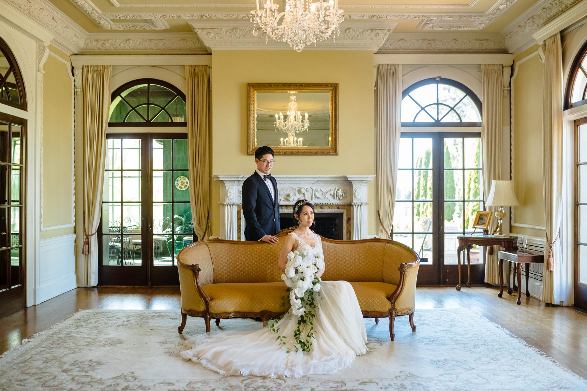
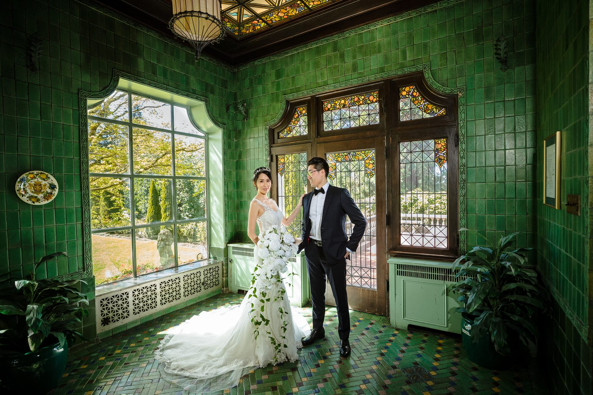
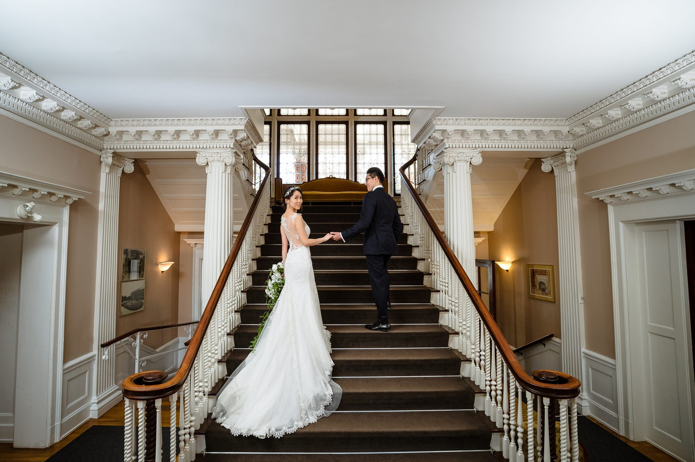
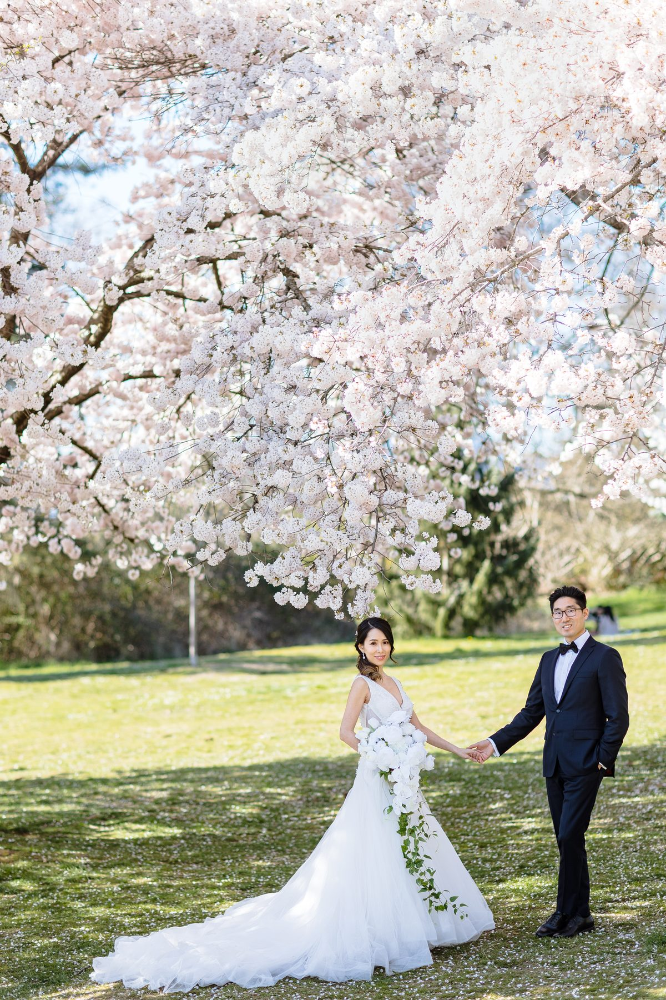
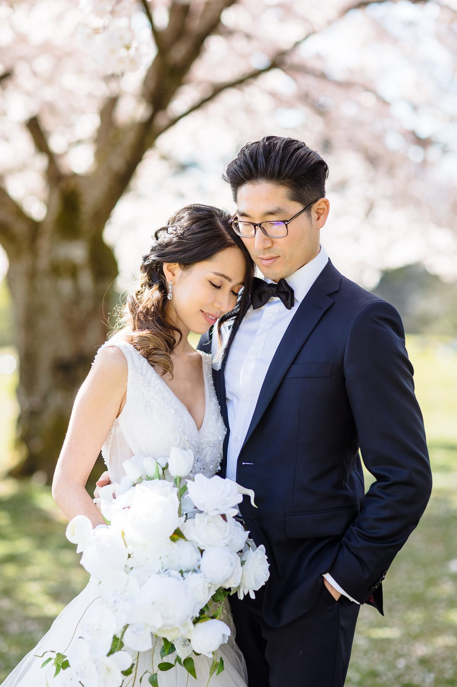
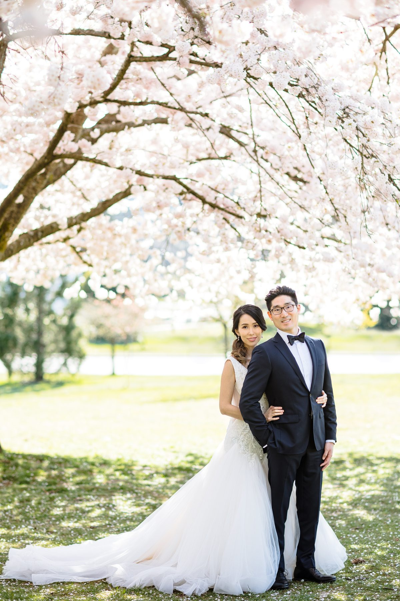
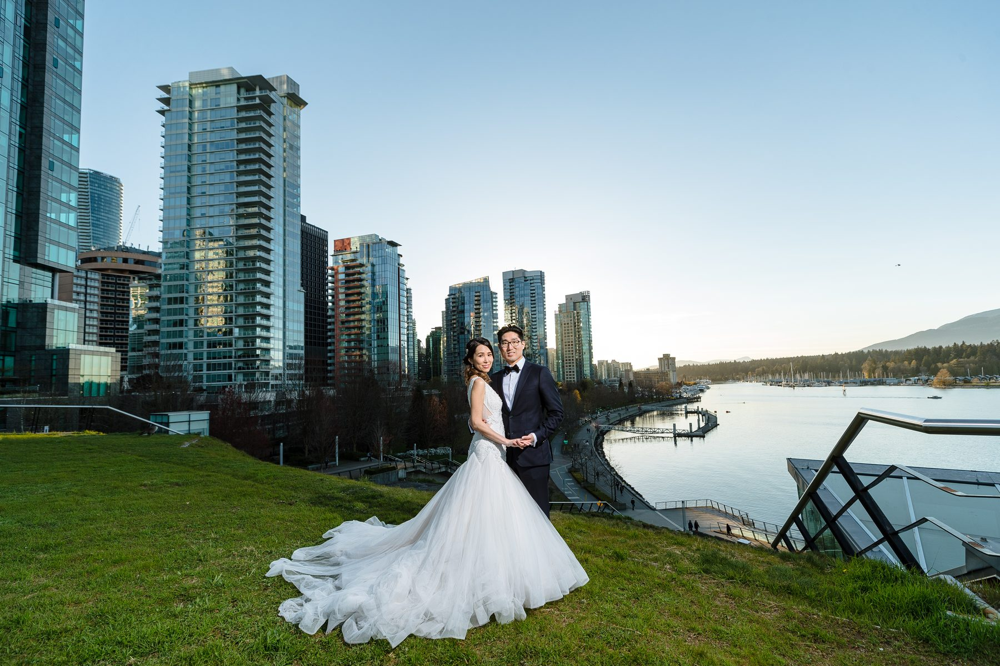
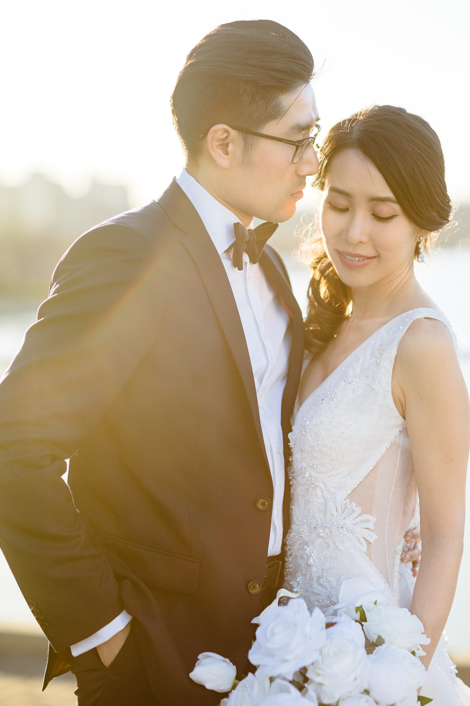

A pre-wedding shoot is a photo session in your wedding clothes, done weeks or months before the wedding. Gown, suit, bouquet, the works. No guests, no timeline, no aunt asking when dinner starts.
It is huge in Asia and still a bit of a mystery to a lot of couples here. People ask me if it is the same as an engagement session. It is not. And it is not for everyone either. Here is the honest version.
An engagement session is you in your own clothes, being yourselves. Jeans, a sweater, a walk somewhere you like. It is relaxed on purpose.
A pre-wedding shoot is the formal version, with time to do it properly. You are dressed for the wedding, but you have three or four hours instead of the twenty minutes of portraits most wedding days allow. You can change locations. You can wait for the light. You can go back and redo the shot where you blinked.
That is the whole point. On the wedding day, portraits get squeezed between the ceremony and the reception. Something always runs late. If you have read how to build a wedding timeline that does not run late, you know where the time goes. A pre-wedding shoot takes the pressure off that window completely.
Here is a spring session we shot. One day, three very different looks.
We started indoors at a heritage mansion. Panelled rooms, arched windows, a big staircase. Morning light comes in soft and low through those windows, so it does most of the work for you.

The green tiled sunroom was my favourite room in the house. Strong colour, good window light, and it looks nothing like a hotel ballroom. Nobody else's wedding album has this room in it.

Staircases are a gift. They give the gown somewhere to fall, and they give the two of you something to do. She walks, he follows, I shoot from the bottom. Done.
Then we drove to the blossoms. Vancouver has thousands of cherry trees, and for about two weeks in spring they are ridiculous. White and pink, everywhere.

Here is the contrarian bit. Midday sun is usually the worst light for photos. Under blossoms, it is fine. The petals act like a giant diffuser and the light bounces off everything white. You get bright, airy frames at an hour I would normally avoid.

Timing is the catch. Peak bloom moves every year and a bit of wind or rain can finish it early. If you want blossoms, keep your date loose and let your photographer call it a few days out.

We finished downtown on the seawall as the sun went down. Glass towers on one side, water and mountains on the other. It is the most Vancouver frame there is, and it is free.


By then they had been in formal clothes for hours and had stopped thinking about it. That is when the good stuff happens. The close frames at the end are always looser than the ones at the start.
It is a good fit if any of this sounds like you:
If your budget is tight, put the money into wedding day coverage first. The day itself is the thing you cannot redo.
And if the idea of a second day in the dress makes you tired, listen to that. Book an engagement session in your own clothes instead. It does a lot of the same job for less effort.
Plan for three to four hours, two or three locations, and a car between them. Bring flats and a jacket for between frames. A friend to carry the train and the bouquet is worth gold.
Book hair and makeup to last the whole session, not only the first hour. Pack blotting papers. Eat something real before you start.
And think about the dress. Some couples wear the actual wedding gown. Some rent a second one so the real dress stays a surprise, or so they can go wilder on location. Both work. Grass stains on the real one do not.
SimplyWed Studio is a Vancouver wedding and engagement photography studio. Tell us your season and the look you want through the contact page, and we will help you pick locations and a date that fits the light.
← Back to the journal